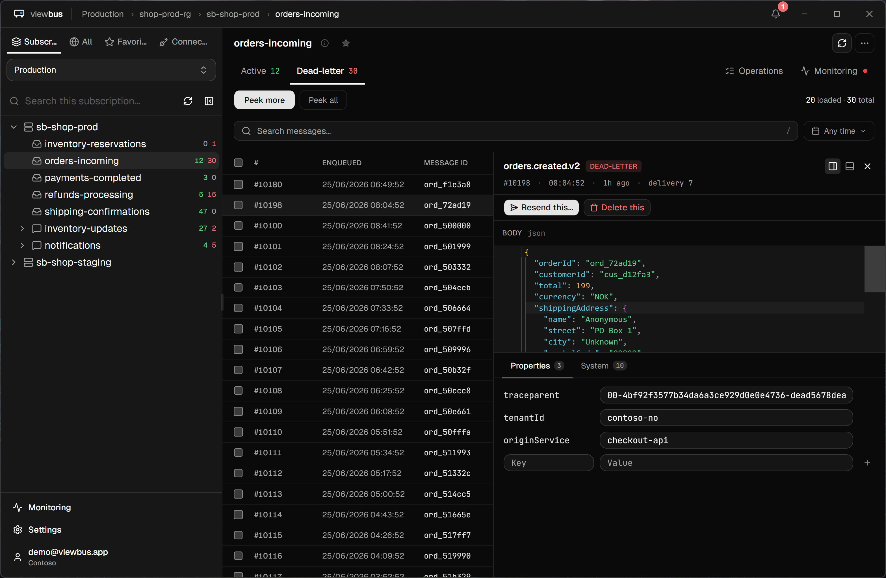

viewbus
Azure Service Bus · Mac & Windows
The local-first Service Bus Explorer
Search, resend, and debug Azure Service Bus — free, native, and MCP-ready.
viewbus.app
Azure Service Bus · Mac & Windows
Search, resend, and debug Azure Service Bus — free, native, and MCP-ready.
viewbus.app

This page renders public/og.png. The card above is exactly 1200×630. Regenerate with a headless 1200×630 screenshot (see the comment at the top of this file) or DevTools → right-click #card → Capture node screenshot.